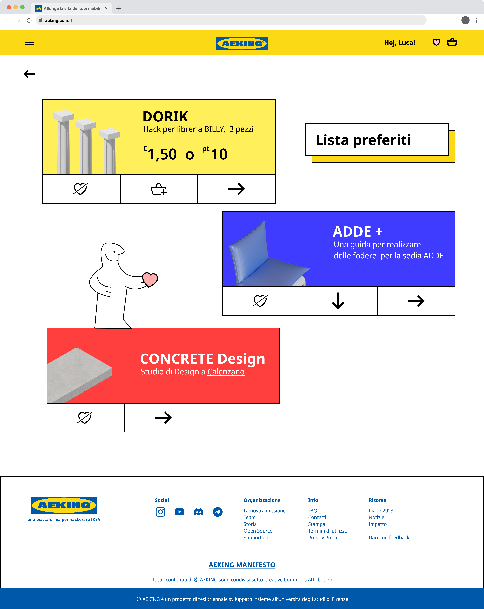

AEKING
A fake platform for IKEA

Rethinking Fast Furniture
During my Bachelor thesis I explored the environmental consequences of mass-produced "Fast Furniture," focusing specifically on the global giant IKEA. IKEA successfully achieve democratic design by providing affordable goods, but this come at the cost of fragile and hard-to-repair materials like particleboard that creates a problematic cycle of consumption and waste.
To combat this throwaway culture, this thesis proposes a systemic, sustainable, and economically competitive framework that uses the concept of "hacking" to extend the lifecycle of these ubiquitous products. Hacking IKEA products is already a diffused practice, sponsored even by the company itself in some marketing occasions.
The Digital Ecosystem
At the center of this vision is AEKING, a conceptual web platform designed to help users preserve, repair, and re-valorize their furniture. By subverting IKEA's traditional branding, the platform fosters a circular economy through community engagement.
A core feature is an interactive map that connects everyday consumers with local "Hackers," skilled artisans, and FabLabs ready to assist with repairs or upgrades. Additionally, AEKING provides step-by-step "cure" guides for standard damages, downloadable 3D models for furniture modifications, and a dedicated marketplace to buy, sell, or donate upcycled pieces.



Physical Proofs of Concept
To validate the theoretical economical flows of preventing, repairing and local craftmanship, the project introduces three physical prototypes that solve common problems through creative hacking. Ideally, 3 green economically virtuos cycle can be enabled by the platform: selling of open source design, fixing economy and local craftmanship personalizations.
DORIK
DORIK addresses the widespread issue of bending shelves in the popular BILLY bookcase by introducing 3D-printable, stackable support columns inspired by ancient Greek architecture. It acts as structural fix preventing the bending of the shelves. The height of the base can be adjusted to the differents height of the shelves.


ATLAS
ATLAS demonstrates how artisan intervention can rescue completely broken items, taking the snapped legs of a LACK table and casting them into a new, brutalist concrete base. The concrete was choosen to contrast the lightness of the Billy Table: the weight of sustainability is not always made evident by the appearance of an object.

ADDE+
Finally, ADDE+ serves as a textile provocation, using basic tailoring and repurposed IKEA FRAKTA bags to create a cover for two cushions for the rigid ADDE chair. The idea is to contrast the monotony of the IKEA design with a personal touch of a local artist or by following community free guides that are available on the platform.